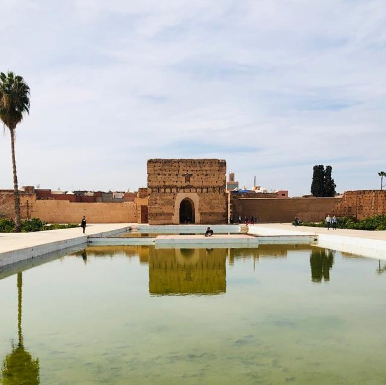
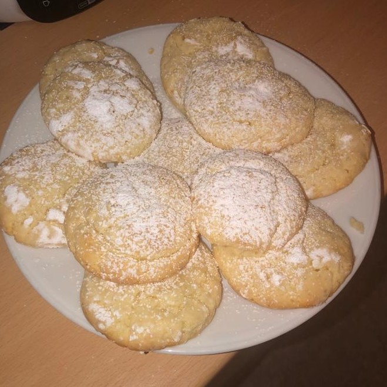
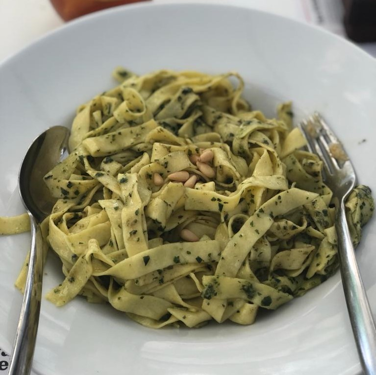

Zen Zone
Ein Video, dass "ich" gedreht habe. #PositiveVibesMeine Leidenschaften
Dies sind meine After-School-Activities! Vom Kochen und Backen bis zum Fotografieren!I do it all! LOL

Das ist in Marrakesh, Marokko.
"Homemade" Cookies. Dr.Oetker macht's möglich.
Nudeln mit Soße aus dem Glas.
Favorite to least favorite
Wenn ich meine Leidenschaften favoritisieren müsste, würde es folgendermaßen aussehen:- Reisen
- Fotografieren
- Kochen und Backen